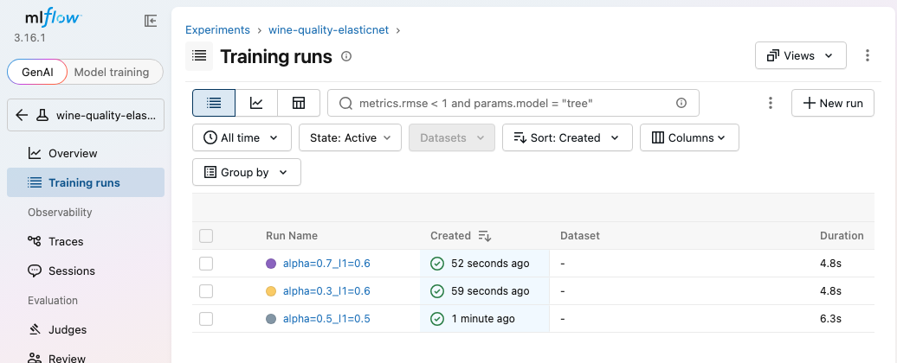
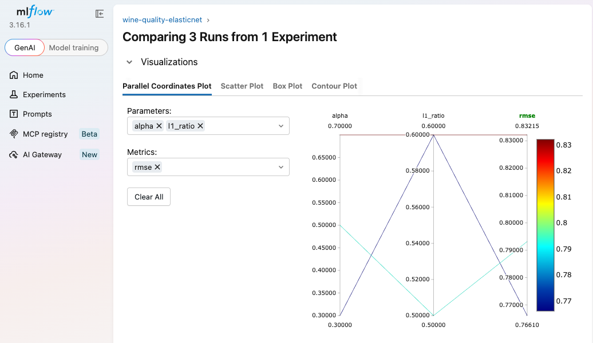
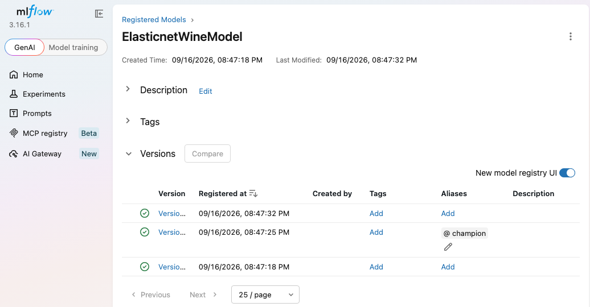

This is the practical half of the MLflow topic. The instructor writes a small demo.py that trains an ElasticNet model on the red-wine-quality data, wraps it in mlflow.start_run() with log_param and log_metric, and sends every run to DagsHub, a hosted platform with an MLflow server connected to a GitHub repo. He runs three experiments from the terminal with different alpha and l1_ratio values, then uses the Compare view's parallel coordinates plot to pick the best one.
The instructor creates a folder called MLOps tool demo, opens it in VS Code, selects his test environment, and writes a requirements.txt:
# requirements.txt
mlflow==2.2.2 # the version pinned in the video
dagshub # added a bit later, for the remote server
$ pip install -r requirements.txtWhat the demo connects together
The Kaggle dataset, loaded from a GitHub URL as CSV. Columns such as fixed acidity, volatile acidity, citric acid… are used to predict the wine's quality score. The file is semicolon-separated, so it's read with sep=";".
Quality is a number, so the metrics are MSE / RMSE, MAE and R². The model is ElasticNet, the regularised linear regression from Chapter 14.
Imports used: pandas, numpy, the sklearn metrics, train_test_split, ElasticNet, urlparse (to check what kind of tracking URI is in use), mlflow, mlflow.sklearn, infer_signature, dagshub and logging.
MLflow has integrations, called flavours, for many libraries: scikit-learn, TensorFlow, PyTorch, XGBoost, LangChain, LlamaIndex and more. Use the one that matches the model:
| Project type | MLflow module | Example |
|---|---|---|
| Classic ML (this demo) | mlflow.sklearn | mlflow.sklearn.log_model(model, …) |
| Deep learning (TensorFlow/Keras) | mlflow.tensorflow | used in the course's later deep learning project |
| Deep learning (PyTorch) | mlflow.pytorch | mlflow.pytorch.log_model(net, …) |
| LLM apps | mlflow.langchain, mlflow.llama_index | GenAI tracking and evaluation |
The instructor's key message: it's ordinary ML code. The MLflow-specific part is the with mlflow.start_run(): block and the logging calls inside it. The sketch below is condensed from the project version in the hands-on folder, with MLflow lines highlighted.
import sys, numpy as np, pandas as pd
from sklearn.linear_model import ElasticNet
from sklearn.model_selection import train_test_split
import mlflow, mlflow.sklearn, dagshub
dagshub.init(repo_owner="<user>", repo_name="mlflow-test", mlflow=True) # ① connect to DagsHub
def eval_metrics(actual, pred): # ② one helper for all metrics
rmse = np.sqrt(mean_squared_error(actual, pred))
return rmse, mean_absolute_error(actual, pred), r2_score(actual, pred)
np.random.seed(40)
data = pd.read_csv(WINE_CSV_URL, sep=";") # ③ semicolon-separated (wrapped in try/except + logging)
train, test = train_test_split(data) # 75 / 25 split
train_x, test_x = train.drop(["quality"], axis=1), test.drop(["quality"], axis=1)
train_y, test_y = train[["quality"]], test[["quality"]]
alpha = float(sys.argv[1]) if len(sys.argv) > 1 else 0.5 # ④ values from the command line
l1_ratio = float(sys.argv[2]) if len(sys.argv) > 2 else 0.5
with mlflow.start_run(): # ⑤ everything inside is one tracked run
model = ElasticNet(alpha=alpha, l1_ratio=l1_ratio, random_state=42).fit(train_x, train_y)
rmse, mae, r2 = eval_metrics(test_y, model.predict(test_x))
mlflow.log_param("alpha", alpha) # ⑥ inputs → log_param
mlflow.log_param("l1_ratio", l1_ratio)
mlflow.log_metric("rmse", rmse) # ⑦ results → log_metric
mlflow.log_metric("r2", r2)
mlflow.log_metric("mae", mae)
if urlparse(mlflow.get_tracking_uri()).scheme != "file": # ⑧ a server has a model registry…
mlflow.sklearn.log_model(model, "model", registered_model_name="ElasticnetWineModel")
else: # …a local folder doesn't
mlflow.sklearn.log_model(model, "model")| # | Piece | Why it's there |
|---|---|---|
| ① | dagshub.init(…, mlflow=True) | Points MLflow at the DagsHub repo's tracking server. The instructor says the setup used to be more complicated and is now this single line. |
| ② | eval_metrics() | Takes actual and predicted values and returns RMSE, MAE and R². |
| ③ | read CSV in try/except | If the URL fails, the exception is written to the log. |
| ④ | sys.argv | "System arguments": pass alpha and l1_ratio when running the file, with 0.5 as the default. |
| ⑤ | with mlflow.start_run(): | MLflow tracks everything in this block automatically. |
| ⑥ ⑦ | log_param / log_metric | Parameters are what you set (alpha, l1_ratio). Metrics are what you measure (RMSE, R², MAE). |
| ⑧ | urlparse(...).scheme | With a remote server (DagsHub) the model is also registered. A plain local file store doesn't support the registry. |
The runs should live on a remote server in the cloud, not only on the laptop. DagsHub is an MLOps platform that provides this, and more:
Versioned data (it also works with DVC).
A hosted MLflow server per repo. This is the feature used here.
Registered models and their versions.
Traces which data and code produced which model.
It supports many frameworks and tools, and the instructor calls it production grade. Sign up with your email. When the onboarding asks what you want to do, choose Experiment tracking.
Create a GitHub repo named mlflow-test, public, with a README.
On DagsHub: Create → New repository → Connect a repository. Other options are a blank repo or a template, and Bitbucket and other hosts are also supported.
Choose GitHub, then Add/revoke access, pick your account, confirm your password, select the repository and Save.
Select the repo and click Connect repository. You land on its DagsHub dashboard.
Click Remote and copy the MLflow tracking URI (the first one). DagsHub also shows the dagshub.init(repo_owner=…, repo_name=…, mlflow=True) snippet. Paste it at the top of demo.py.
Click Go to MLflow UI. For a new repo, the experiment list is empty.
$ python demo.py # run 1: alpha 0.5, l1_ratio 0.5 (defaults)
$ python demo.py 0.3 0.6 # run 2: alpha 0.3, l1_ratio 0.6
$ python demo.py 0.7 0.6 # run 3: "0.7" (see note below)model.pkl. The model also appears in the Models section.The recording makes clear that the third run passes 0.7, but not which argument it changes. The hands-on version uses alpha 0.7, l1_ratio 0.6.
alpha and l1_ratio. Only r2 is selected as a metric at first, so add rmse and mae.The three runs from the hands-on replay (same seed as the course code)
Hover a bar. Lower is better for RMSE and MAE; higher is better for R².
Run as many experiments as you like, and MLflow keeps every one. Selecting the best model out of 100 or 1,000 runs then takes a few clicks on the parallel coordinates plot instead of an Excel sheet. The course uses this approach in the projects that follow.
Select any run and click Delete. The instructor removes an old experiment this way. The UI also has a light/dark theme switch, and the documentation link is in the sidebar.
Beyond the video: deleted runs go to a "deleted" state and can be restored, until an admin runs mlflow gc to remove them permanently.
mlflow.set_tracking_uri(...) inside start_run(), after logging. dagshub.init(…, mlflow=True) has already set it, so that line is redundant, and changing the URI in the middle of an active run is fragile. Set it once, before the run.mlflow==2.2.2 (2023). With MLflow 3.x, log_model takes name="model" instead of the older artifact_path, and registry stages have been replaced by aliases (e.g. @champion).dagshub.init opens a browser login, or you can run dagshub login. In CI, set MLFLOW_TRACKING_USERNAME and MLFLOW_TRACKING_PASSWORD (a DagsHub token) as secrets. Never commit the token.DagsHub needs your own account, so the notebook starts mlflow server locally. That's the same kind of HTTP tracking server DagsHub hosts. demo.py sends runs to DagsHub when DAGSHUB_REPO_OWNER and DAGSHUB_REPO_NAME are set, otherwise to MLFLOW_TRACKING_URI, otherwise to a local folder. So the same file works for the video's setup.

The MLflow UI after the three runs.

Compare → Parallel Coordinates Plot, with RMSE selected by default. The darkest line (lowest RMSE) comes from alpha 0.3 / l1_ratio 0.6.
Each run registered a version of ElasticnetWineModel (v1–v3). The notebook gave version 2 (the best run) the alias @champion and loaded it with mlflow.pyfunc.load_model("models:/ElasticnetWineModel@champion").

mlflow models serve -m "models:/ElasticnetWineModel@champion" --port 5058 --env-manager local started a REST server. A request with three wines returned:
This is your first working model endpoint. Later chapters wrap the same idea in Docker, CI/CD and the cloud.
A throwaway run oops-wrong-params was deleted through the API. Afterwards: active runs: 3 · deleted runs: ['oops-wrong-params'].
To browse the results yourself: cd projects/ch15_mlflow_dagshub && mlflow ui --backend-store-uri sqlite:///mlflow.db. The notebook's final cell has the exact steps to switch to DagsHub.
mlruns/?So the whole team (and CI jobs) logs to one place and sees the same runs. It also gives you a model registry (not available with a plain file store), durable artifact storage (S3/GCS or a hosted store), and access control. Options include a self-hosted mlflow server with a database and object store, DagsHub, Databricks, or SageMaker's managed MLflow.
log_param: inputs or configuration (strings, set once per run). log_metric: numeric results, which can be logged repeatedly with a step to form curves. log_artifact: any file (plots, reports, data samples). log_model: a model in MLflow format (with its environment and signature) that can be loaded, registered and served.
The expected input columns and types and the output schema, stored with the model. It documents the API contract, and MLflow uses it to validate inputs at serving time, so a request with missing or mistyped features fails clearly instead of producing silent garbage.
Decide the primary metric in advance (e.g. RMSE on a fixed validation set), use the others as tie-breakers or constraints (e.g. latency or model size), and query programmatically with search_runs(order_by=["metrics.rmse ASC"]). Visual tools such as parallel coordinates help you understand trade-offs. Here all three metrics agreed.
A central catalogue of named models with numbered versions, each linked to the run that produced it. Aliases (e.g. champion, challenger) are movable pointers, so deployment code loads models:/name@champion. Promoting a new model is then just moving the alias, and rolling back means pointing it at the old version.
mlflow models serve -m models:/name@alias gives a local REST /invocations endpoint. mlflow models build-docker produces a container image to deploy anywhere (ECS, Kubernetes, SageMaker). You can also load the model with mlflow.pyfunc.load_model inside your own FastAPI or Flask app.
Store the DagsHub token as a CI secret, expose it as MLFLOW_TRACKING_USERNAME and MLFLOW_TRACKING_PASSWORD (plus MLFLOW_TRACKING_URI) in the job environment, and never write credentials into code or commit them.
np.random.seed(40)?train_test_split without random_state uses NumPy's global random state. Seeding it makes the split identical on every run, so different runs differ only in their hyperparameters and the comparison is fair. Passing random_state= explicitly is cleaner.
requirements.txt: mlflow (2.2.2 in the video) and dagshub. Data: red-wine quality (regression, sep=";"). Model: ElasticNet.mlflow.sklearn for ML, mlflow.tensorflow or mlflow.pytorch for deep learning.with mlflow.start_run(): + log_param (alpha, l1_ratio) + log_metric (rmse, r2, mae) + log_model (registered when a server is used).dagshub.init(…, mlflow=True), open Go to MLflow UI.python demo.py, demo.py 0.3 0.6, demo.py 0.7 0.6, then Compare → parallel coordinates → lowest RMSE/MAE and highest R² → alpha 0.3, l1_ratio 0.6.@champion and a working /invocations endpoint.